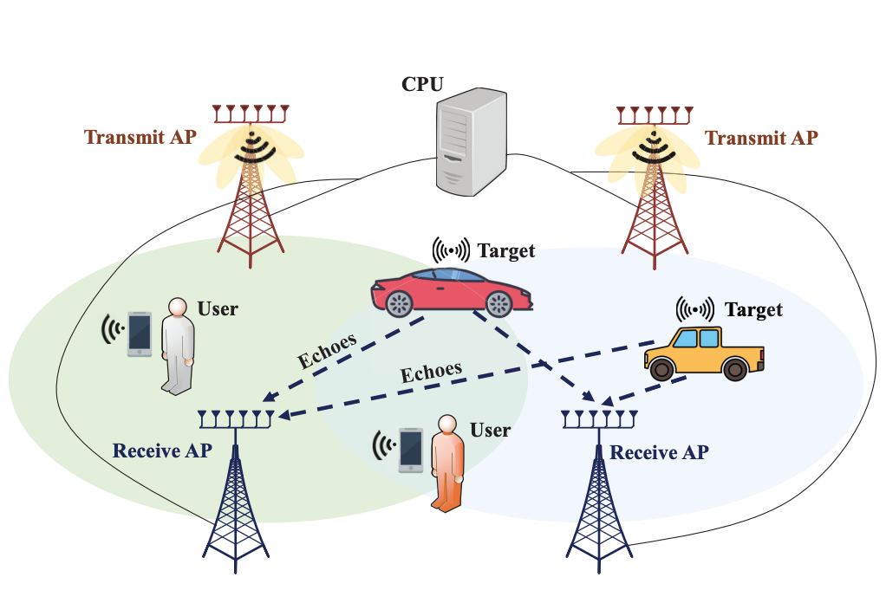

|
 |
Cooperative ISAC for Localization and Velocity Estimation Using OFDM Waveforms in Cell-Free MIMO Systems
Zihuan Wang, Vincent Wong ICASSP, April 2025 Presented a cooperative integrated sensing and communication framework in cell-free MIMO systems, where multiple access points collaboratively perform target sensing by using the reflected echo signals. |